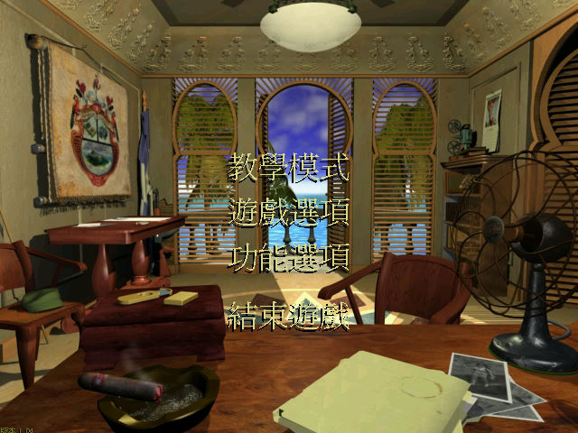
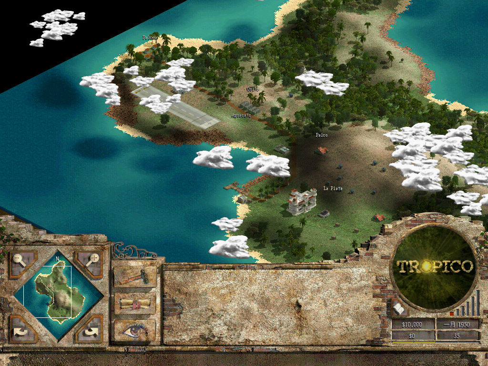

名稱：總統萬歲／海島大亨／天堂島 (Tropico，中文／英文版)
簡介：PopTop 2001年出品的島嶼建設經營模擬遊戲，由Gathering of Developers代理發行，
2002年由BreakAway推出「天堂島（Paradise Island）」資料片。台灣由大宇中文化
並代理發行 [待補]。


保護：光碟
備註：英文版安裝完資料片後，版本為1.50。
備註：繁中版為2CD，安裝後已含資料片，版本不明。
檔案：tropico107.rar = 英文主程式1.07更新檔（安裝過資料片後不可使用）
TPI_151.rar = 英文資料片1.51更新檔
TPI_153.rar = 英文資料片1.53更新檔（需先更新至1.51）